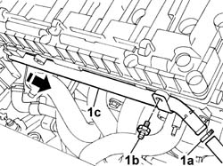
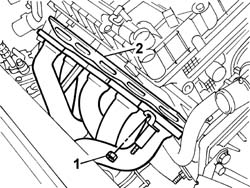

1072C13 EXHAUST MANIFOLD GASKET - REPLACEMENT
- Path
- Procedures > 10 ENGINE > 1072 inlet and exhaust manifolds > 1072C exhaust manifolds > 1072C13 EXHAUST MANIFOLD GASKET - REPLACEMENT
- Kind
- repair procedure (removal / refitting; the operation number is the code)
- Applies to
- engines: 2.4 20V; all production periods
- Interactive page
- https://sloeber94.github.io/elrnDB-lThss/en/#/93804
Applies to: engines: 2.4 20V; all production periods
 Removing
Removing
 Refitting
Refitting- Position the vehicle on a lift.
- Disconnect the negative battery lead.
See in Op. 7040D50 ENGINE COMPARTMENT UPPER SOUND INSULATION SHIELD - R.R.
See in Op. 1048A28 vacuum air circuit resonator pipe - r+r
See in Op. 1048A21 AIR INLET HOSE FROM INTAKE TO FILTER - R.R.
See in Op. 1048A23 Cold AIR INTAKE for air filter - R.R.
See in Op. 1016A40 Ignition COIL COVER on cylinder head - R.R.
See in Op. 7055B54 PROTECTION/GUARD under engine - R.R.
See in Op. 1072C44 Exhaust manifold heat shield on BULKHEAD - R.R.
1. Disconnect the band (1a), undo the bolt (1b) and extract the rigid engine coolant pipe (1c).

Applies to: engines: 2.4 20V; all production periods
1. Undo the nuts joining the exhaust manifold to the cylinder head.
2. Move the exhaust manifold aside and extract the gasket underneath.

Applies to: engines: 2.4 20V; all production periods
Refitting
Removing- Position the new gasket and fit the exhaust manifold on the studs.
- Tighten the nuts fixing the exhaust manifold to the cylinder head to the recommended torque.
 | Value - daNm | Fastening | Component | Ø |
|---|---|---|---|---|
. | 2.5 | Nut | EXHAUST MANIFOLD/S | M8 |
- Fit the rigid engine coolant pipe and secure it to the flexible hose using the bolt and the band.
See in Op. 1072C44 Exhaust manifold heat shield on BULKHEAD - R.R.
See in Op. 1016A40 Ignition COIL COVER on cylinder head - R.R.
See in Op. 1048A23 Cold AIR INTAKE for air filter - R.R.
See in Op. 1048A21 AIR INLET HOSE FROM INTAKE TO FILTER - R.R.
See in Op. 1048A28 vacuum air circuit resonator pipe - r+r
- Connect the negative battery lead.
See in Op. 0010T20 Engine REFRIGERANT FLUID - Change
- Raise the vehicle on the lift.
See in Op. 7055B54 PROTECTION/GUARD under engine - R.R.
See in Op. 7040D50 ENGINE COMPARTMENT UPPER SOUND INSULATION SHIELD - R.R.
- Remove the vehicle from the lift.
Topics linked from this page (8)
- 0010T20 Engine REFRIGERANT FLUID - Change
- 1016A40 Ignition COIL COVER on cylinder head - R.R.
- 1048A21 AIR INLET HOSE FROM INTAKE TO FILTER - R.R.
- 1048A23 Cold AIR INTAKE for air filter - R.R.
- 1048A28 vacuum air circuit resonator pipe - r+r
- 1072C44 Exhaust manifold heat shield on BULKHEAD - R.R.
- 7040D50 ENGINE COMPARTMENT UPPER SOUND INSULATION SHIELD - R.R.
- 7055B54 PROTECTION/GUARD under engine - R.R.